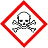
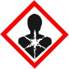
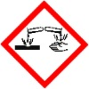
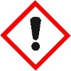
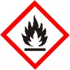
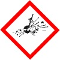
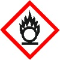
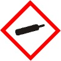
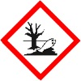

| Gefahren- piktogramm |
z. B. für folgende Eigenschaften | Wirkung | Beispielhafte Schutzmaßnahmen |
 Totenkopf mit gekreuzten Knochen (GHS06) |
akut toxisch | Stoffe und Gemische, die durch Aufnahme durch Verschlucken, über die Haut und/oder durch Einatmen äußerst schwere akute oder schwere akute Gesundheitsschäden oder Tod bewirken. | Schutzhandschuhe/Schutzkleidung/ Augenschutz/Gesichtsschutz tragen. Bei Exposition sofort Arzt anrufen. Staub/ Rauch/Gas/Nebel/ Dampf/ Aerosol nicht ein atmen. Kein Kontakt mit der Haut, Augen und Kleidung. An einem gut belüf - teten Ort aufbewahren. Behälter dicht verschlossen halten. |
 Gesundheitsgefahr (GHS08) |
|||
| krebserzeugend, fruchtbarkeitsschädigend organschädigend | Stoffe und Gemische, die bekanntermaßen krebserzeugend oder fruchtbarkeitsschädigend beim Menschen sind. | Schutzhandschuhe/Schutzkleidung/ Augenschutz/Gesichtsschutz tragen. Staub/Rauch/ Gas/Nebel/ Dampf/Aerosol nicht ein atmen. Bei Exposition sofort einen Arzt hinzuziehen. Kein Erbrechen hervorrufen. Unter Verschluss aufbewahren. | |
| organschädigend | Stoffe und Gemische, die die Körperfunktionen wie Organe und Gewebe beeinträchtigen ohne zum Tod zu führen. | ||
| aspirationstoxisch | Feste oder flüssige Stoffe und Gemische, die beim Eindringen in die Lunge Lungenschäden hervorrufen und zum Tod führen können. | ||
| atemwegssensibilisierend | Stoffe und Gemische, die eine Überempfindlichkeit der Atemwege wie Asthma verursachen. | ||
 Ätzwirkung (GHS05) |
|||
| hautätzend, schwer augenschädigend | Stoffe und Gemische, die die Haut zerstören/verätzen. Stoffe und Gemische, die das Augengewebe oder das Sehvermögen schädigen. | Schutzhandschuhe/Schutzkleidung/ Augenschutz/Gesichtsschutz tragen. Nicht in die Augen, auf die Haut oder auf die Kleidung gelangen lassen. Bei Kontakt mit der Haut oder Augen einige Minuten lang mit Wasser ausspülen. | |
| metallkorrosiv | Stoffe und Gemische, die gegenüber Metallen korrosiv sind und diese beschädigen oder zerstören. | In korrosionsbeständigem Behälter mit widerstandsfähiger Innenauskleidung aufbewahren. | |
 Ausrufezeichen (GHS07) |
|||
| reizend, haut - sensibilisierend | Stoffe und Gemische, die die Haut, die Augen und/oder die Atemwege reizen oder/oder eine allergische Hautreaktion wie z.B. juckender Hautausschlag, Schuppungen, Bläschen auslösen. | Bei Berührung mit der Haut oder den Augen mit viel Wasser waschen. Bei anhaltender Augen - reizung einen Arzt hinzuziehen. Beim Einatmen die Person an die frische Luft bringen und für ungehinderte Atmung sorgen. | |
| narkotisierend | Stoffe und Gemische, die eine narkotisierende Wirkung (Schläfrigkeit, Benommen heit, Schwindel) haben. | ||
| Ozonschicht schädigend | Stoffe und Gemische, die die Ozonschicht schädigen. | Freisetzung in die Umwelt vermeiden. | |
 Flamme (GHS02) |
entzündbare Flüssigkeiten, Feststoffe und Gase, Aerosole, selbsterhitzungsfähige Stoffe/ Gemische | Stoffe und Gemische, die extrem entzündbar, leicht entzündbar oder entzündbar sind. Stoffe und Gemische, die sich selbst an der Luft erhitzen und in Brand geraten. | Von Hitze, heißen Oberflächen, Funken, offenen Flammen und anderen Zündquellen fernhalten. Nicht rauchen. Maßnahmen gegen elektrostatische Entladungen treffen. Explosionsgeschützte elektrische Geräte verwenden. Vor Sonnenbestrahlung schützen. An einem gut belüfteten Ort aufbewahren. Kühl halten. |
 Explodierende Bombe (GHS01) |
explosiv | Instabile oder stabile explosive Stoffe und Gemische sowie Erzeugnisse mit Explosivstoff | Von Hitze, heißen Oberflächen, Funken, offenen Flammen und anderen Zündquellen fernhalten. Nicht rauchen. Nicht schleifen/stoßen/reiben. Bei Brand: Umgebung räumen. Explosionsgefahr. |
 Flamme über einem Kreis (GHS03) |
brandfördernd (oxidierend) | Stoffe und Gemische, die die Verbrennung anderer Materialien verursachen oder begünstigen. | Von Kleidung und brennbaren Materialien fernhalten und entfernt aufbewahren. Mischen mit brennbaren Stoffen unbedingt verhindern. |
 Gasflasche (GHS04) |
unter Druck stehende Gase | Verdichtete, verflüssigte, gelöste und tiefgekühlt verflüssigte Gase | Schutzhandschuhe mit Kälte - isolierung und Augen- und Gesichtsschutz tragen. Vor Sonnenbestrahlung schützen. An einem gut belüfteten Ort aufbewahren. |
 Umwelt (GHS09) |
akut und chronisch gewässergefährdend | Stoffe und Gemische, die sehr giftig, giftig oder schädlich für Wasserorganismen mit kurz- und/ oder langfristiger Wirkung sind. | Freisetzung in die Umwelt vermeiden. Inhalt und/oder den Behälter fachgerecht entsorgen. Verschüttete Mengen aufnehmen und entsorgen. |